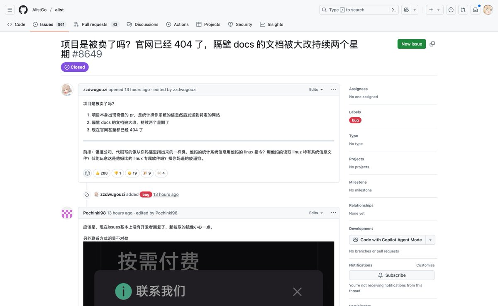
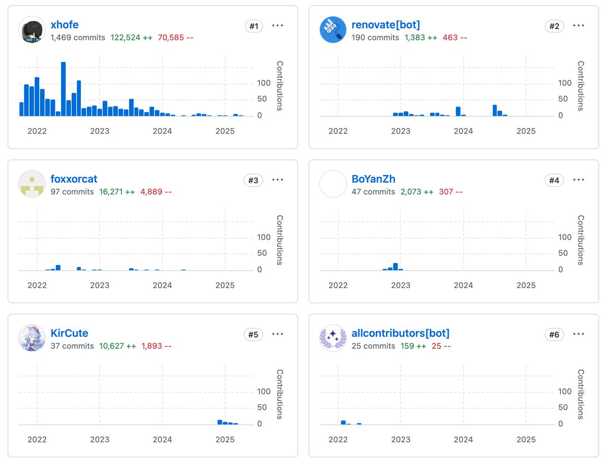
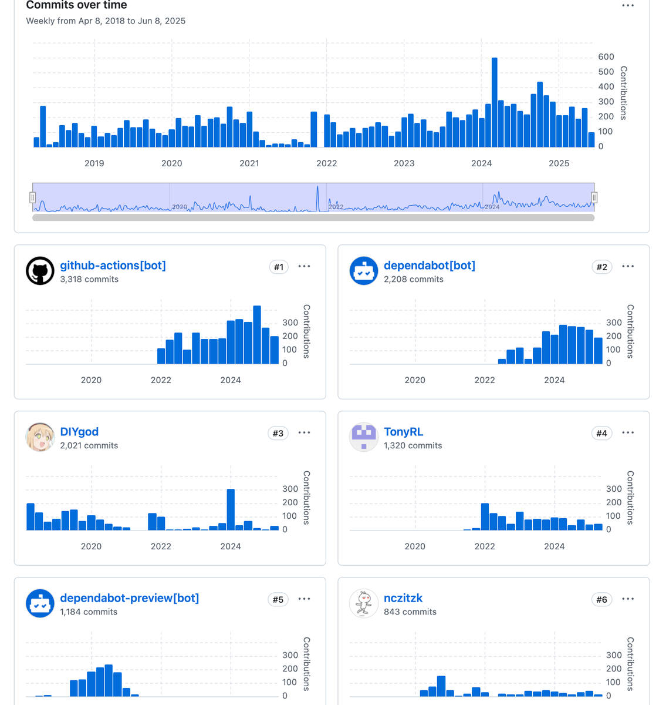

大笨蛋不會溝通🕊bsky
@appleneko2001
RT @DIYgod: 看到 alist 被以非常丑陋的姿态卖掉，对作者、用户、收购方都是个悲剧，感觉非常可惜，但从开源作者的角度又挺理解原作者的，现在破口大骂资本的 alist 用户应该都没体会过开源的苦，看不到作者的长期孤独贡献，只看到又少了一个可以白嫖的项目… https…



DIŸgöd ☀️
@DIYgod
看到 alist 被以非常丑陋的姿态卖掉，对作者、用户、收购方都是个悲剧，感觉非常可惜，但从开源作者的角度又挺理解原作者的，现在破口大骂资本的 alist 用户应该都没体会过开源的苦，看不到作者的长期孤独贡献，只看到又少了一个可以白嫖的项目 https://t.co/ETePt9K5Bg